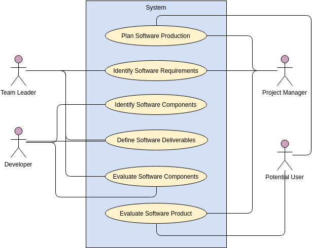
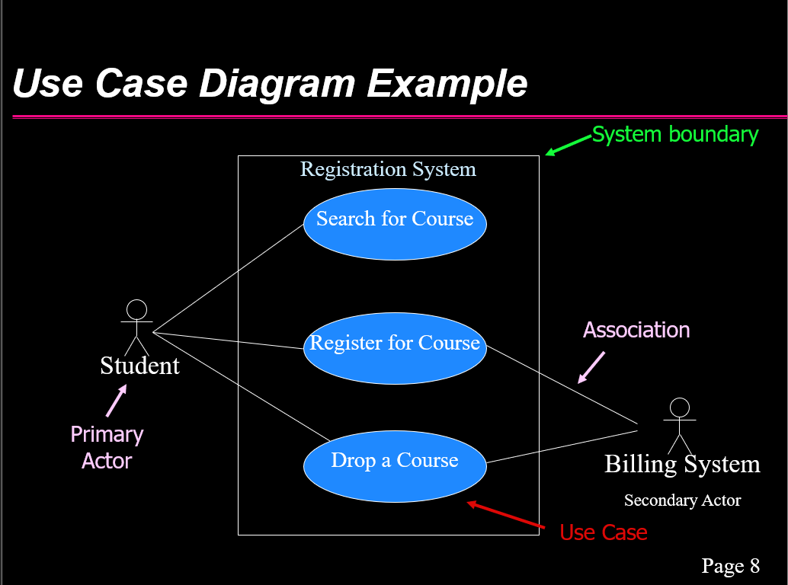
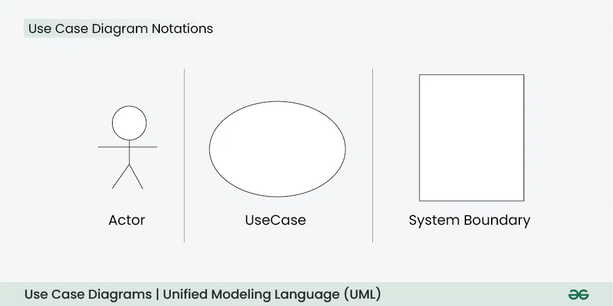
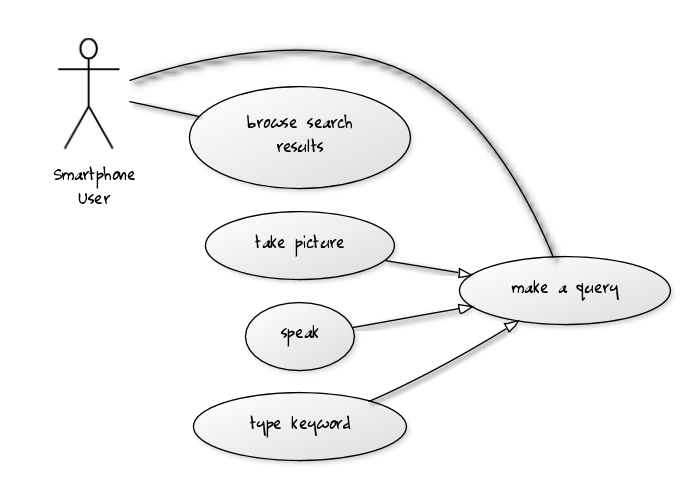
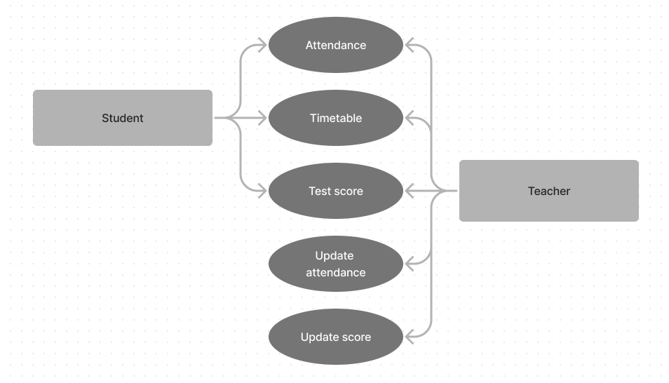

What a use-case is?

UML, use case diagram is the primary form of system software requirements for a new software program
underdeveloped.
Use cases specify the expected behavior, and not the exact method of making it happen.
Use cases once specified can be denoted, textual and visual representation (use case diagram).
Use case modeling is that it helps us design a system from the end user's perspective.
Communicating system behavior in the user's terms specifying all externally visible system behavior.
Enumerate the elements that may be represented in a UML use-case diagram.
UML, use-case diagrams model the behavior of a system and help to capture the requirements of the system.
Use case diagrams describe the functions and scope of a system. Diagrams also identify the interactions between
the system and its actors.
Use case diagrams illustrate and define the context and requirements of either an entire system or the important
parts of the system.
Actor:

An actor represents a role of a user that interacts with the system that you are modeling.
The user can be a human user, an organization, a machine, or another external system.
Use-Case:
A use case describes a function that a system performs to achieve the user's goal.
A use case must yield an observable result that is of value to the user of the system.
System boundary:

The system boundary defines the scope of the system being modeled in the use-case diagram.
It's depicted as a box around the system's components.
Relationships (extends, includes, data transfer):

In a use-case diagram, relationships define connections and interactions between different elements such as
actors and use cases
- Extends:
Indicates that one use case may optionally extend another use case under certain
conditions.
- Includes:
Indicates that one use case includes the behavior of another use case.
One use case needs the functionality provided by another use case to complete its own functionality.
- Data Transfer:
Standard relationship in UML use case diagrams, data transfer flow between
actors and use cases can be depicted using labels. This represents the flow of data between actors and the
system.
Understand the relationship between the different elements, the differences between them, and enumerate them from
our system :
A system can be defined as a collection of components that work together to achieve a goal. The components of a
system are
the individual parts that make up the system and functions or tasks within the system. The relationship between a
system and
its components. Each component is reliant on the others to function effectively, and together they work to achieve
the goal
of the system. Changes to one component can have a significant impact on the functioning of the system.In addition
to the components,
a system is also influenced by its environment. the external factors and conditions that affect the system, but
are outside of its control.
The relationship between a system and its environment is one of interaction and adaptation. The system must be
able to respond to changes
in its environment in order to maintain its effectiveness. This may involve modifying the system's components or
adjusting its strategies
and plans in response to changing conditions.Overall, the relationships between a system, its components, and its
environment are complex and
dynamic, and require ongoing management and adaptation in order to ensure the system's success.
Create a use-case diagram using any available tools, or by hand:

This use case diagram shows that I can create use case diagrams.
created at
Figma website.